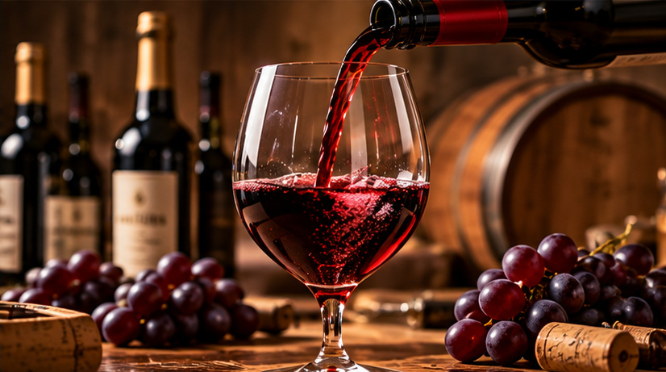
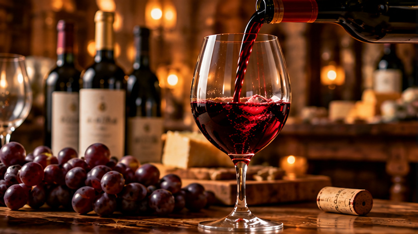
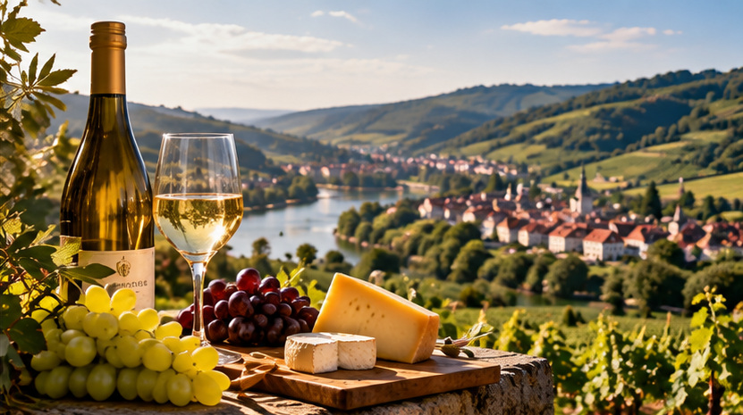

Wines
Red, white and rosé wines reflecting diverse regions and traditions.
Bringing wine regions and international markets closer through knowledge, relationships and a shared appreciation for exceptional wines.
Discover Our Story →Discovering the character of distinctive wine regions.
Connecting established markets and new opportunities.
Understanding the needs of professional partners.
Building connections founded on trust and continuity.

Based in Hong Kong, MC GROUP is connected with the international wine and beverage trade.
Our work brings together an appreciation for the craft of winemaking and an understanding of the relationships that move wines across borders. We believe every wine carries a sense of place, people and tradition.
More About Us →Explore the broad categories that shape the international wine and beverage landscape.

Red, white and rosé wines reflecting diverse regions and traditions.
Celebrated expressions of craftsmanship, heritage and occasion.

Distinctive sparkling styles from established wine regions.
“Great wines bring people together across cultures, regions and borders.”